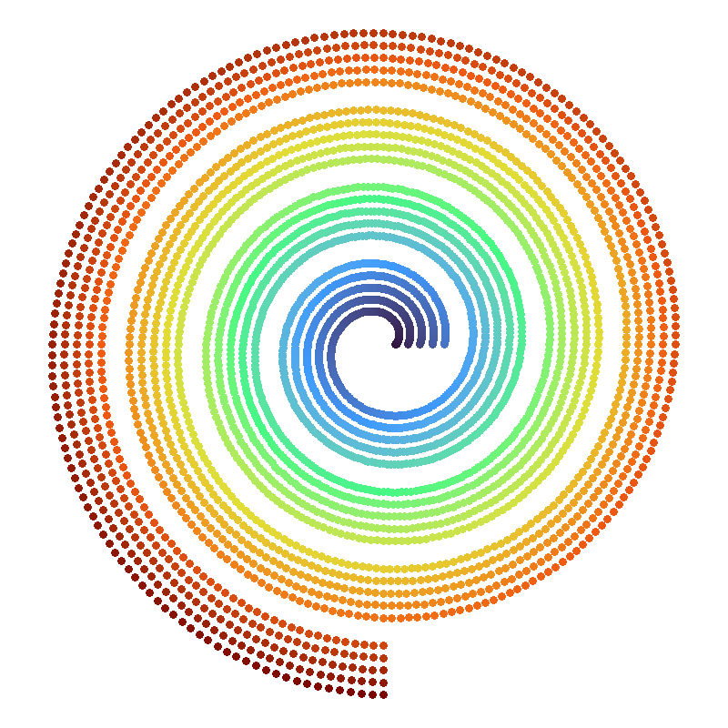

1 About masmr

This book provides an introduction to masmr: Modular Algorithms for Spotcalling in MERFISH in R.
The {masmr} package is designed to allow users to build custom image processing pipelines, with a focus on MERFISH decoding.
1.1 Installation
Currently, this package is hosted on GitHub:
https://github.com/eugenekwaNeuromics/masmr/.
Installation should be achievable with the devtools package:
devtools::install_github('eugenekwaNeuromics/masmr')Currently depends on the following packages:
-
ggplot2,scales,reshape2,viridis: for plotting. -
data.table: for quick reading and writing of data files. -
RBioFormats: for reading a variety of microscopy image formats. -
imager,EBImage: for image processing functions. -
tripack: for triangular meshing functions. -
reticulate: for interfacing with Python (used during cell segmentation). -
parallel: for getting number of cores on machine. -
Rcpp,RcppEigen: for functions written in C++. -
RcppML: for fast non-negative matrix factorization. -
igraph: for clustering. -
rlang: for parsing arguments.